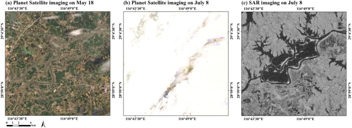
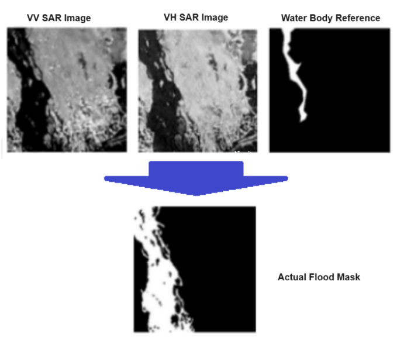
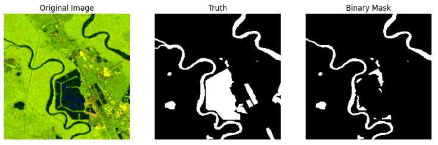
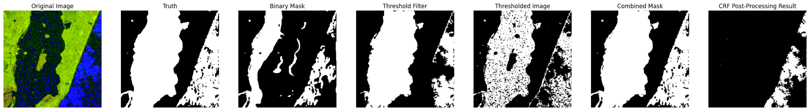
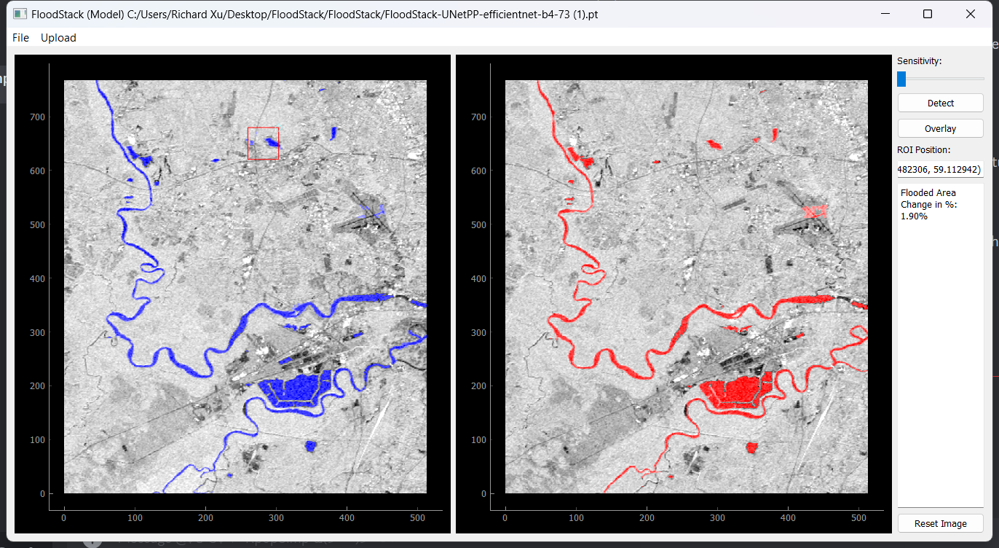

Project file 005 // Richard Xu + Colin Hu
Teaching radar to find floodwater.
Richard Xu and I built FloodStack as an end-to-end research tool for rapidly mapping floods from Sentinel-1 radar imagery. Together, we trained the segmentation models, designed the threshold-correction algorithm, and brought preprocessing, inference, and before-and-after change detection into one interface.
- 2.2B
- people affected by flooding over the previous decade
- 10M+
- worldwide displacements recorded in 2019
- 24/7
- SAR observation through cloud cover and darkness
01 // The visibility problem
The storm can hide the flood.
Weather radar can track precipitation and rain gauges can measure rainfall accurately at one location. Neither one directly traces the full boundary of water spread across a large landscape.
Optical satellites offer scale, but heavy cloud cover can obscure the ground during the event itself. Synthetic Aperture Radar sends its own microwave signal and measures the return, so it can observe the surface through clouds and at night.

02 // Building the input
Two radar views become one richer signal.

Vertical transmit / vertical receive. Sensitive to surface roughness and vertically oriented geometry.
Vertical transmit / horizontal receive. Useful for moisture, vegetation, and cross-polarized scattering.
We normalized a VH-to-VV ratio and stacked all three views into a composite image. The network therefore saw both raw channels plus their relationship instead of relying on VV alone.
RGB = stack(VV, VH, 1 − clip(VH ÷ VV))
Expert-labeled flood imagery from Nebraska, North Alabama, and Bangladesh, prepared as 256 × 256 composite tiles.
03 // Deep learning
Train two architectures. Keep the sharper mask.
We fine-tuned U-Net++ and a Feature Pyramid Network using ImageNet-pretrained EfficientNet-B4 encoders. Both learn to classify every pixel as water or non-water; U-Net++ uses nested skip connections to recover spatial detail, while FPN fuses features across resolutions.
- 01TilePrepare aligned 256 × 256 SAR composites
- 02EncodeEfficientNet-B4 extracts multiscale features
- 03DecodeU-Net++ reconstructs the flood boundary
- 04SegmentOutput a pixel-wise probability mask

| Architecture | Precision | Recall | F1 | IoU |
|---|---|---|---|---|
| U-Net++ / EfficientNet-B4 | 88.8 | 74.6 | 79.2 | 73.5 |
| FPN / EfficientNet-B4 | 82.3 | 79.1 | 79.0 | 73.1 |
| U-Net baseline | 83.2 | 76.1 | 75.8 | 67.4 |
| X-Net baseline | 82.2 | 70.6 | 73.0 | 64.4 |
| ResNet18 U-Net baseline | — | — | 78.1 | 64.1 |
04 // Novel error correction
Let the model set the threshold.
A fixed brightness threshold can work in one region and fail in another. FloodStack instead uses the first U-Net++ prediction to sample what water looks like in the current scene, derives a threshold from that evidence, removes noisy contours, and merges credible recovered pixels back into the mask.
- 01
Run U-Net++ to create the initial water mask.
- 02
Calculate the average SAR value inside predicted water.
- 03
Threshold the scene using that learned water signature.
- 04
Filter small contours and obvious noise.
- 05
Combine the filtered candidates with the model mask.

Case study // Region absent from training
Correction improved overlap and sensitivity.
The combined mask found more true water in an unseen geography, with the expected tradeoff of a small precision decrease.
- +2.0
- IoU points
- +2.5
- recall points
- +1.5
- F1 points
- −0.9
- precision points
05 // From research to tool
Put the entire workflow behind one interface.
FloodStack’s desktop interface brings preprocessing, model inference, error correction, overlays, and change detection into one place. A user can inspect the mask, tune sensitivity, select a region of interest, and compare two dates without stitching together separate research scripts.

Build the VV/VH composite and prepare model-ready tiles.
Run the trained U-Net++ segmentation model.
Recover missed regions with threshold and contour filtering.
Measure pixel-wise water change between two events.
What we learned // What comes next
A useful map is more than a model output.
The project’s strongest result was not simply choosing U-Net++ over FPN. It was combining learned segmentation with a conventional computer-vision step, then wrapping both in a tool that exposes change over time.
Deep learning found the pattern. Threshold correction helped it travel.
- More temporal dataMove toward continuous, near-real-time change analysis.
- More geographic diversityReduce the performance drop in regions absent from training.
- Larger backbonesTest EfficientNet-B7 where precision matters more than compute.
- Sharper correctionRecover sensitivity without giving away as much precision.